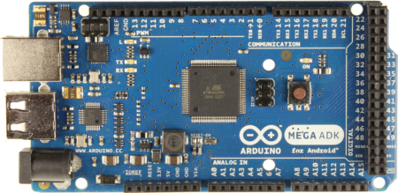
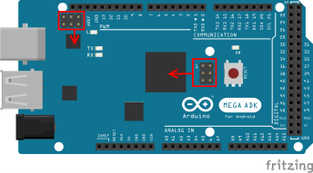

altLab Troubleshooting Sessions - Recovering an Arduino MEGA ADK
By João Alves ([email protected]) on Nov 28, 2014
Pedro Angelo has brought this card and it seems that it is damaged on a software level not being able to be programmed using USB.
The Board
The Arduino MEGA ADK is a special board based on the ATmega2560. It has a USB host interface to connect with Android based phones, based on the MAX3421e IC. Like the Arduino Mega 2560 it has 54 digital input/output pins (of which 15 can be used as PWM outputs), 16 analog inputs, 4 UARTs (hardware serial ports), a 16 MHz crystal oscillator, a USB connection, a power jack, an ICSP header, and a reset button.
Summary
- Microcontroller: ATmega2560
- Operating Voltage: 5V
- Input Voltage (recommended): 7-12V
- Input Voltage (limits): 6-20V
- Digital I/O Pins: 54 (of which 15 provide PWM output)
- Analog Input Pins: 16
- DC Current per I/O Pin: 40 mA
- DC Current for 3.3V Pin: 50 mA
- Flash Memory: 256 KB of which 8 KB used by bootloader
- SRAM: 8 KB
- EEPROM: 4 KB
- Clock Speed: 16 MHz
- USB Host Chip: MAX3421E
More info on Arduino official MEGA ADK page.

Symptons
- Unable to upload sketches using Arduino IDE
- Pin 13 LED always on
The errors that appeared in the Arduino IDE:
Binary sketch size: 1,628 bytes (of a 258,048 byte maximum)
Binary sketch size: 1,628 bytes (of a 258,048 byte maximum)
avrdude: stk500v2_ReceiveMessage(): timeout
avrdude: stk500v2_ReceiveMessage(): timeout
avrdude: stk500v2_ReceiveMessage(): timeout
avrdude: stk500v2_ReceiveMessage(): timeout
avrdude: stk500v2_ReceiveMessage(): timeout
avrdude: stk500v2_ReceiveMessage(): timeout
avrdude: stk500v2_getsync(): timeout communicating with programmer
Long History
Spoiler... Short History....
The first possible problem would be a firmware bootloader code on the ATmega2560 microcontroller.
Using an inexpensive ebay usbasp clone I’ve tried to update the bootloader and check for the correctness of the fuse settings. I’ve run the 3 recommended commands (as in Burning the bootloader onto the Arduino Mega 2560): * Setup Fuses unlocking bootloader * Burn the bootloader * Setup Fuses locking bootloader
$ avrdude -c usbasp -p m2560 -P usb -b 115200 -e -u -U lock:w:0x3F:m -U efuse:w:0xFD:m -U hfuse:w:0xD8:m -U efuse:w:0xFF:m
$ avrdude -c usbasp -p m2560 -P usb -b 115200 -V -U flash:w:stk500boot_v2_mega2560.hex
$ avrdude -c usbasp -p m2560 -P usb -b 115200 -U lock:w:0x0F:m
And this was the output:
avrdude: Version 5.11, compiled on Sep 7 2011 at 19:34:16
Copyright (c) 2000-2005 Brian Dean, http://www.bdmicro.com/
Copyright (c) 2007-2009 Joerg Wunsch
System wide configuration file is "/home/jpalves/apps/arduino-1.0.6/hardware/tools/avrdude.conf"
User configuration file is "/home/jpalves/.avrduderc"
User configuration file does not exist or is not a regular file, skipping
Using Port : usb
Using Programmer : usbasp
avrdude: seen device from vendor ->www.fischl.de<-
avrdude: seen product ->USBasp<-
AVR Part : ATMEGA2560
Chip Erase delay : 9000 us
PAGEL : PD7
BS2 : PA0
RESET disposition : dedicated
RETRY pulse : SCK
serial program mode : yes
parallel program mode : yes
Timeout : 200
StabDelay : 100
CmdexeDelay : 25
SyncLoops : 32
ByteDelay : 0
PollIndex : 3
PollValue : 0x53
Memory Detail :
Block Poll Page Polled
Memory Type Mode Delay Size Indx Paged Size Size #Pages MinW MaxW ReadBack
----------- ---- ----- ----- ---- ------ ------ ---- ------ ----- ----- ---------
eeprom 65 10 8 0 no 4096 8 0 9000 9000 0x00 0x00
Block Poll Page Polled
Memory Type Mode Delay Size Indx Paged Size Size #Pages MinW MaxW ReadBack
----------- ---- ----- ----- ---- ------ ------ ---- ------ ----- ----- ---------
flash 65 10 256 0 yes 262144 256 1024 4500 4500 0x00 0x00
Block Poll Page Polled
Memory Type Mode Delay Size Indx Paged Size Size #Pages MinW MaxW ReadBack
----------- ---- ----- ----- ---- ------ ------ ---- ------ ----- ----- ---------
lfuse 0 0 0 0 no 1 0 0 9000 9000 0x00 0x00
Block Poll Page Polled
Memory Type Mode Delay Size Indx Paged Size Size #Pages MinW MaxW ReadBack
----------- ---- ----- ----- ---- ------ ------ ---- ------ ----- ----- ---------
hfuse 0 0 0 0 no 1 0 0 9000 9000 0x00 0x00
Block Poll Page Polled
Memory Type Mode Delay Size Indx Paged Size Size #Pages MinW MaxW ReadBack
----------- ---- ----- ----- ---- ------ ------ ---- ------ ----- ----- ---------
efuse 0 0 0 0 no 1 0 0 9000 9000 0x00 0x00
Block Poll Page Polled
Memory Type Mode Delay Size Indx Paged Size Size #Pages MinW MaxW ReadBack
----------- ---- ----- ----- ---- ------ ------ ---- ------ ----- ----- ---------
lock 0 0 0 0 no 1 0 0 9000 9000 0x00 0x00
Block Poll Page Polled
Memory Type Mode Delay Size Indx Paged Size Size #Pages MinW MaxW ReadBack
----------- ---- ----- ----- ---- ------ ------ ---- ------ ----- ----- ---------
calibration 0 0 0 0 no 1 0 0 0 0 0x00 0x00
Block Poll Page Polled
Memory Type Mode Delay Size Indx Paged Size Size #Pages MinW MaxW ReadBack
----------- ---- ----- ----- ---- ------ ------ ---- ------ ----- ----- ---------
signature 0 0 0 0 no 3 0 0 0 0 0x00 0x00
Programmer Type : usbasp
Description : USBasp, http://www.fischl.de/usbasp/
avrdude: auto set sck period (because given equals null)
avrdude: warning: cannot set sck period. please check for usbasp firmware update.
avrdude: AVR device initialized and ready to accept instructions
Reading | ################################################## | 100% 0.01s
avrdude: Device signature = 0x1e9801
avrdude: erasing chip
avrdude: auto set sck period (because given equals null)
avrdude: warning: cannot set sck period. please check for usbasp firmware update.
avrdude: reading input file "0x3F"
avrdude: writing lock (1 bytes):
Writing | ################################################## | 100% 0.00s
avrdude: 1 bytes of lock written
avrdude: verifying lock memory against 0x3F:
avrdude: load data lock data from input file 0x3F:
avrdude: input file 0x3F contains 1 bytes
avrdude: reading on-chip lock data:
Reading | ################################################## | 100% 0.00s
avrdude: verifying ...
avrdude: 1 bytes of lock verified
avrdude: reading input file "0xFD"
avrdude: writing efuse (1 bytes):
Writing | ################################################## | 100% 0.00s
vrdude: 1 bytes of efuse written
avrdude: verifying efuse memory against 0xFD:
avrdude: load data efuse data from input file 0xFD:
avrdude: input file 0xFD contains 1 bytes
avrdude: reading on-chip efuse data:
Reading | ################################################## | 100% 0.00s
avrdude: verifying ...
avrdude: 1 bytes of efuse verified
avrdude: reading input file "0xD8"
avrdude: writing hfuse (1 bytes):
Writing | ################################################## | 100% 0.00s
avrdude: 1 bytes of hfuse written
avrdude: verifying hfuse memory against 0xD8:
avrdude: load data hfuse data from input file 0xD8:
avrdude: input file 0xD8 contains 1 bytes
avrdude: reading on-chip hfuse data:
Reading | ################################################## | 100% 0.00s
avrdude: verifying ...
avrdude: 1 bytes of hfuse verified
avrdude: reading input file "0xFF"
avrdude: writing lfuse (1 bytes):
Writing | ################################################## | 100% 0.00s
avrdude: 1 bytes of lfuse written
avrdude: verifying lfuse memory against 0xFF:
avrdude: load data lfuse data from input file 0xFF:
avrdude: input file 0xFF contains 1 bytes
avrdude: reading on-chip lfuse data:
Reading | ################################################## | 100% 0.01s
avrdude: verifying ...
avrdude: 1 bytes of lfuse verified
avrdude done. Thank you.
avrdude: Version 5.11, compiled on Sep 7 2011 at 19:34:16
Copyright (c) 2000-2005 Brian Dean, http://www.bdmicro.com/
Copyright (c) 2007-2009 Joerg Wunsch
System wide configuration file is "/home/jpalves/apps/arduino-1.0.6/hardware/tools/avrdude.conf"
User configuration file is "/home/jpalves/.avrduderc"
User configuration file does not exist or is not a regular file, skipping
Using Port : usb
Using Programmer : usbasp
avrdude: seen device from vendor ->www.fischl.de<-
avrdude: seen product ->USBasp<-
AVR Part : ATMEGA2560
Chip Erase delay : 9000 us
PAGEL : PD7
BS2 : PA0
RESET disposition : dedicated
RETRY pulse : SCK
serial program mode : yes
parallel program mode : yes
Timeout : 200
StabDelay : 100
CmdexeDelay : 25
SyncLoops : 32
ByteDelay : 0
PollIndex : 3
PollValue : 0x53
Memory Detail :
Block Poll Page Polled
Memory Type Mode Delay Size Indx Paged Size Size #Pages MinW MaxW ReadBack
----------- ---- ----- ----- ---- ------ ------ ---- ------ ----- ----- ---------
eeprom 65 10 8 0 no 4096 8 0 9000 9000 0x00 0x00
Block Poll Page Polled
Memory Type Mode Delay Size Indx Paged Size Size #Pages MinW MaxW ReadBack
----------- ---- ----- ----- ---- ------ ------ ---- ------ ----- ----- ---------
flash 65 10 256 0 yes 262144 256 1024 4500 4500 0x00 0x00
Block Poll Page Polled
Memory Type Mode Delay Size Indx Paged Size Size #Pages MinW MaxW ReadBack
----------- ---- ----- ----- ---- ------ ------ ---- ------ ----- ----- ---------
lfuse 0 0 0 0 no 1 0 0 9000 9000 0x00 0x00
Block Poll Page Polled
Memory Type Mode Delay Size Indx Paged Size Size #Pages MinW MaxW ReadBack
----------- ---- ----- ----- ---- ------ ------ ---- ------ ----- ----- ---------
hfuse 0 0 0 0 no 1 0 0 9000 9000 0x00 0x00
Block Poll Page Polled
Memory Type Mode Delay Size Indx Paged Size Size #Pages MinW MaxW ReadBack
----------- ---- ----- ----- ---- ------ ------ ---- ------ ----- ----- ---------
efuse 0 0 0 0 no 1 0 0 9000 9000 0x00 0x00
Block Poll Page Polled
Memory Type Mode Delay Size Indx Paged Size Size #Pages MinW MaxW ReadBack
----------- ---- ----- ----- ---- ------ ------ ---- ------ ----- ----- ---------
lock 0 0 0 0 no 1 0 0 9000 9000 0x00 0x00
Block Poll Page Polled
Memory Type Mode Delay Size Indx Paged Size Size #Pages MinW MaxW ReadBack
----------- ---- ----- ----- ---- ------ ------ ---- ------ ----- ----- ---------
calibration 0 0 0 0 no 1 0 0 0 0 0x00 0x00
Block Poll Page Polled
Memory Type Mode Delay Size Indx Paged Size Size #Pages MinW MaxW ReadBack
----------- ---- ----- ----- ---- ------ ------ ---- ------ ----- ----- ---------
signature 0 0 0 0 no 3 0 0 0 0 0x00 0x00
Programmer Type : usbasp
Description : USBasp, http://www.fischl.de/usbasp/
avrdude: auto set sck period (because given equals null)
avrdude: warning: cannot set sck period. please check for usbasp firmware update.
avrdude: AVR device initialized and ready to accept instructions
Reading | ################################################## | 100% 0.01s
avrdude: Device signature = 0x1e9801
avrdude: NOTE: FLASH memory has been specified, an erase cycle will be performed
To disable this feature, specify the -D option.
avrdude: erasing chip
avrdude: auto set sck period (because given equals null)
avrdude: warning: cannot set sck period. please check for usbasp firmware update.
avrdude: reading input file "/home/jpalves/apps/arduino-1.0.6/hardware/arduino/bootloaders/stk500v2/stk500boot_v2_mega2560.hex"
avrdude: writing flash (261406 bytes):
Writing | ################################################## | 100% 144.37s
avrdude: 261406 bytes of flash written
avrdude: verifying flash memory against /home/jpalves/apps/arduino-1.0.6/hardware/arduino/bootloaders/stk500v2/stk500boot_v2_mega2560.hex:
avrdude: load data flash data from input file /home/jpalves/apps/arduino-1.0.6/hardware/arduino/bootloaders/stk500v2/stk500boot_v2_mega2560.hex:
avrdude: input file /home/jpalves/apps/arduino-1.0.6/hardware/arduino/bootloaders/stk500v2/stk500boot_v2_mega2560.hex contains 261406 bytes
avrdude: reading on-chip flash data:
Reading | ################################################## | 100% 139.13s
avrdude: verifying ...
avrdude: verification error, first mismatch at byte 0x1e000
0xff != 0x0d
avrdude: verification error; content mismatch
avrdude done. Thank you.
But when I run the flash command (the second one), I always got the error of the verification. This error is probably the result of the usbasp clone having an old version of the software and not being able to flash the 256Kb of the MEGA.
Then I’ve tried an alternative way of flashing the MEGA. The Nick Gammon way!
Nick has created a very nice and simple way to flash the bootloader on several different atmel microcontrollers only using the console to control the process.
Using a custom cable and a CSEduino I’ve made the following steps: * Uploaded the code [Atmega_Board_Programmer] (https://github.com/nickgammon/arduino_sketches/tree/master/Atmega_Board_Programmer) to the CSEduino * Disconnected everything * Wired the CSEduino and the ATMega according to the following:
| CSEduino | atMEGA2560 |
|---|---|
| Gnd | ICSP pin 6 - Gnd |
| VCC +5V | ICSP pin 2 - +5V |
| D13 (SCK) | ICSP pin 3 - D52 |
| D12 (MISO) | ICSP pin 1 - D50 |
| D11 (MOSI) | ICSP pin 4 - D51 |
| D10 (SS) | ICSP pin 5 - Reset |
After that i've Connected the FTDI interface to the CSEduino:
After choosing the USB monitor:
Atmega chip programmer.
Written by Nick Gammon.
Entered programming mode OK.
Signature = 0x1E 0x98 0x01
Processor = ATmega2560
Flash memory size = 262144 bytes.
LFuse = 0xFF
HFuse = 0xD8
EFuse = 0xFD
Lock byte = 0xCF
Bootloader address = 0x3E000
Bootloader length = 8192 bytes.
Type 'G' to program the chip with the bootloader ...
Pressed the G
Erasing chip ...
Writing bootloader ...
Committing page starting at 0x3E000
Committing page starting at 0x3E100
Committing page starting at 0x3E200
Committing page starting at 0x3E300
Committing page starting at 0x3E400
Committing page starting at 0x3E500
Committing page starting at 0x3E600
Committing page starting at 0x3E700
Committing page starting at 0x3E800
Committing page starting at 0x3E900
Committing page starting at 0x3EA00
Committing page starting at 0x3EB00
Committing page starting at 0x3EC00
Committing page starting at 0x3ED00
Committing page starting at 0x3EE00
Committing page starting at 0x3EF00
Committing page starting at 0x3F000
Committing page starting at 0x3F100
Committing page starting at 0x3F200
Committing page starting at 0x3F300
Committing page starting at 0x3F400
Committing page starting at 0x3F500
Committing page starting at 0x3F600
Committing page starting at 0x3F700
Committing page starting at 0x3F800
Committing page starting at 0x3F900
Committing page starting at 0x3FA00
Committing page starting at 0x3FB00
Committing page starting at 0x3FC00
Committing page starting at 0x3FD00
Committing page starting at 0x3FE00
Committing page starting at 0x3FF00
Written.
Verifying ...
No errors found.
Writing fuses ...
LFuse = 0xFF
HFuse = 0xD8
EFuse = 0xFD
Lock byte = 0xCF
Done.
Type 'C' when ready to continue with another chip ...
Done.
The bootloader was OK.
Again disconnected everything. Connected the MEGA with the USB cable to the PC and run the IDE, loaded the Blink Sketch and tried to upload it.
Binary sketch size: 1,628 bytes (of a 258,048 byte maximum)
Binary sketch size: 1,628 bytes (of a 258,048 byte maximum)
avrdude: stk500v2_ReceiveMessage(): timeout
avrdude: stk500v2_ReceiveMessage(): timeout
avrdude: stk500v2_ReceiveMessage(): timeout
avrdude: stk500v2_ReceiveMessage(): timeout
avrdude: stk500v2_ReceiveMessage(): timeout
avrdude: stk500v2_ReceiveMessage(): timeout
avrdude: stk500v2_getsync(): timeout communicating with programmer
Humm…. same problem.
Well back to square one.
One thing was for sure. The MEGA now had the proper bootloader and fuses setup. But it still didn’t work.
Short History
After thinking for a while and after some googling... I started to look for other options. I’ve read that there is another Atmel microcontroller on the board, the ATmega8U2 that is responsible for the USB-to-serial convertion... hummm is that the problem ?
After reading some documentation about the role of the chip: * Updating the Atmega8U2 and 16U2 on an Uno or Mega2560 using DFU * How to upgrade ATMEGA8U2 Firmware * Arduino Uno and Mega 2560 Firmwares for the ATmega8U2
Then I noticed that the board has a second ICSP header near the chip: 
Connected the usbasp clone programmer and plugged it into the ICSP header of the atMEGA8U2 and run the following command:
avrdude -p at90usb82 -F -P usb -c avrispmkii -U flash:w:MEGA-dfu_and_usbserial_combined.hex -U lfuse:w:0xFF:m -U hfuse:w:0xD9:m -U efuse:w:0xF4:m -U lock:w:0x0F:m
This command was executed in the hardware/arduino/firmwares/atmegaxxu2 folder where the file MEGA-dfu_and_usbserial_combined.hex is. If you don’t have it you can download it from the github link above. After this step, tried to upload Blink using the Arduino IDE again and....
It worked!!!!!!
The Arduino MEGA ADK is working like a charm!
I Love when the story ends well.
No magic smoke this time!